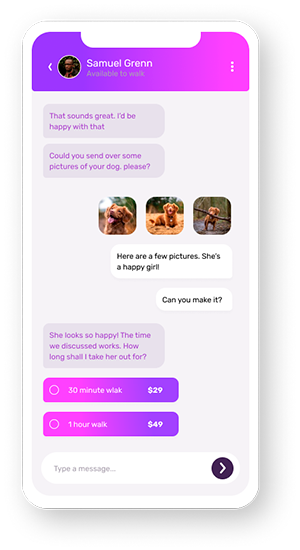

Simple booking
Stay in touch with our dog walkers through the chat interface. This makes it easy to discuss arrangements and make bookings. Once the walk has been completed you can rate your walker and book again all through the chat.